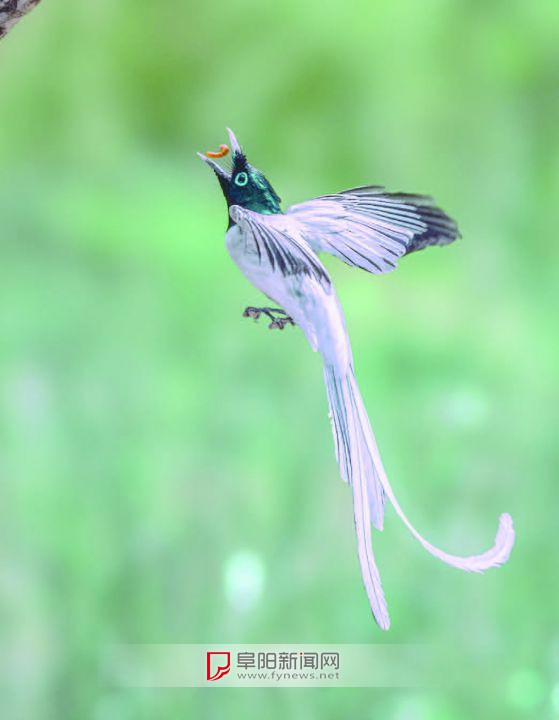

长长的尾羽，艳丽的色彩，优美的体态……近日，被誉为“林中仙子”的世界级濒危物种绶带鸟，又“做客”阜南县方集镇，这也是绶带鸟连续3年在方集繁育后代。
日前，在阜南县方集镇谢小湾，摄影爱好者闫保斌今年首次拍摄到罕见的绶带鸟，这是他连续多次拍到绶带鸟了。
绶带鸟是夏候鸟，又被称为“寿带鸟”。雄性绶带鸟长着两条长长的尾羽，色彩艳丽，形似绶带，故此得名。它在林间飞行时，长尾飘动如练，宛如仙子，故有“林中仙子”的美誉。雌性绶带鸟较雄鸟短小。
绶带鸟属于较为少见的珍稀物种，早在2012年就被列入《世界自然保护联盟濒危物种红色名录》，是受国家保护的“三有”动物。
阜南县摄影家协会副主席杜平介绍，2020年6月，阜南摄影爱好者在方集镇谢小湾首次发现绶带鸟。此后，在该镇的大张湾也陆续发现数只。今年绶带鸟又来“做客”方集，而且至少有3对，非常难得。
阜阳师范大学生物与食品工程学院副教授李永民先后参与过全国第二次湿地资源调查（沿淮片区）、全国水鸟同步调查（阜阳片区）等项目工作，对阜阳鸟类保护现状十分熟悉。在阜阳境内以往的调查中，李永民没有观测到绶带鸟。
李永民告诉记者，来阜南“做客”的绶带鸟是夏季繁殖鸟。绶带鸟连续多年在阜南县栖息，他很感兴趣，准备做一次专项调查。
“在阜南县地城镇和于集乡也有人发现过绶带鸟。”杜平说，可见绶带鸟在阜南分布面较广。
绶带鸟越冬栖息地在马来西亚及我国的海南、两广等地区，每年5月至9月间到我国长江、黄河流域等多地繁殖。
记者注意到，绶带鸟“做客”的阜南县方集镇谢小湾、大张湾，地处洪河与洪河分洪道之间，两岸树木参天，绿叶繁茂，洪河故道、沟渠等水网密布，湿地资源丰富，是名副其实的水乡。绶带鸟喜欢生活在生态环境好、近水的树林间，每天都要飞到水面上洗澡，对水质要求高。谢小湾、大张湾分别在洪河故道边和洪河北岸，生态环境和地理环境是绶带鸟临时“安家”繁育后代的理想场所。
“绶带鸟这种珍稀鸟类在我们村临时‘安家’，说明我们这里生态环境好。”阜南县方集镇范庄村两委干部谢纪魁自豪地说，他家就住谢小湾，村民对这几只绶带鸟很爱护，不惊吓、不打扰它们，更不让外来人员伤害它们，我们村民都很自觉地保护它们，希望它们以后每年都来这里临时“安家”。
绶带鸟连续多年在方集临时“安家”的可喜现象，在阜阳并非个例。
近年来，李永民在调查中多次发现，在颍泉区泉水湾国家湿地公园、三角洲公园等地出现过以前淮北平原地区未有的物种，如白颊噪鹛、红嘴蓝鹊、黑脸噪鹛、领雀嘴鹎等。
同时，李永民还发现，很多对于栖息环境要求苛刻的湿地鸟类，成为阜阳的“常客”。如国家一级保护鸟类——青头潜鸭，国家二级保护鸟类——小天鹅、褐翅鸦鹃，国家“三有”动物——斑嘴鸭、绿头鸭、黑眉苇莺、黑枕黄鹂、黑脸噪鹛、灰喜鹊、暗绿绣眼鸟、银喉山雀、棕头鸦雀、远东树莺、巨嘴柳莺等。
“近年来，这些对栖息环境要求苛刻的鸟类在阜阳呈现出种群数量增加、分布区扩大的趋势，说明阜阳生态环境持续向好。”李永民告诉记者。
爱鸟保护协会
3 days ago好可爱的小鸟
取景框的世界
1 days ago毕竟是珍稀物种
大爱阜南
3 days ago竟然在阜南吗，厉害了
我是好耶